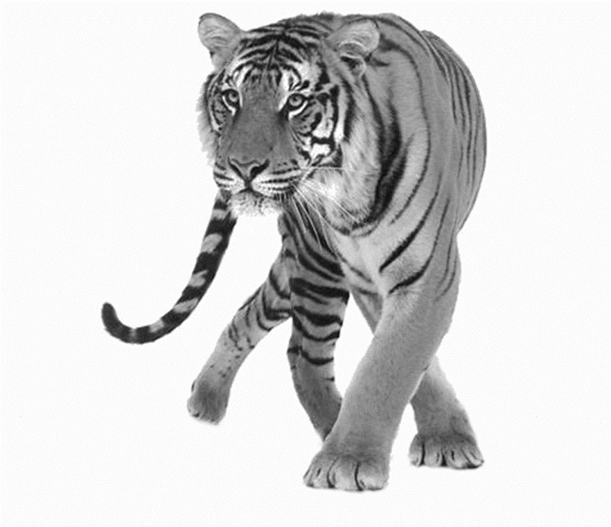

Ist das der Beginn eines sechsten grossen Artensterbens?
von Dylan Schmidt
Delfine, Elefanten, Tiger, Koalas – noch gibt es sie. Zahlreiche andere Tiere hat der Mensch bereits ausgelöscht. Damit begrabe er aber auch seine Lebensgrundlage, so die eindringliche Botschaft des Weltbiodiversitäts- bericht vom Mai 2019. Forscher vermuten, wir stünden kurz vor dem sechsten grossen Artensterben in 540 Millionen Jahren. Dieser Kommentar informiert über die Fakten, Ursachen und Folgen bis hin zur Bekämpfung des Problems.
Als Artensterben wird das Aussterben übermässig vieler Arten in einem bestimmten Zeitraum bezeichnet. Dies ist der Fall, wenn die Populationsgrösse einer Art auf null gefallen ist. Bei diesem Umstand gehen auch dessen genetische Informationen verloren, d.h. der Vorgang ist irreversibel und die Spezies somit für immer verloren.
Der WWF ermittelte 2015 einen Rückgang der Tierbestände um fast 60 % in den letzten 40 Jahren, die Anzahl der Säugetiere, Vögel, Reptilien und Fische habe sich im Schnitt halbiert. Gemäss aktuellen Studien verschwinden jeden Tag etwa 130 Tier- und Pflanzenarten. Dieses Problem betrifft auch die Schweiz; in keinem anderen Land sei der Anteil bedrohter Arten höher, so die Medien- sprecherin des WWF Schweiz. Der Grenzwert für das verkraftbare Aussterben der Arten ist schon lange überschritten und damit noch vor dem Klimawandel das grösste ökologische Problem.
In zurückliegenden Erdzeitaltern gab es auf dem blauen Planeten etwa fünf grosse und zwanzig kleinere Artensterben – oftmals verursacht durch Vulkanausbrüche, Klimaänderungen, Asteorideneinschläge oder andere Naturkatastrophen. Heutzutage ist es überwiegend der Mensch, der die Schuld am Verlust der Artenvielfalt und vieler Ökosysteme trägt. Als Hauptursachen nennt der Weltbiodiversitätsrat IPBES die veränderte Land- und Meeresnutzung, direkter Verbrauch von Pflanzen und Tieren, Klimawandel, Verschmutzung sowie invasive Arten. Letzteres meint Spezies, die Ökosysteme verändern und heimische Arten verdrängen können. Die Erkenntnisse der 2012 gegründeten Organisation sind aber noch umfassender – bereits 75 % der Umwelt wurde durch den Menschen erheblich verändert, die Aussterberate ist heute bis zu hundertmal höher als in den letzten zehn Millionen Jahren. Besonders kritisch sind Aussterbeketten, das bedeutet, Spezies, die wesentlich für das Überleben einer Art waren, sind ausgestorben.
Der bedrückende Verlust an Biodiversität ist indes erst der Fuss des Berges, denn die Folgen für den Einzelnen sind noch bei weitem gravierender. Viele Arten haben einen essenziellen Einfluss auf den menschlichen Organismus, ihr Verschwinden hätte fatale Auswirkungen auf unser Nahrungsspektrum. Die gesamte Flora und Fauna ist eng verknüpft und bildet ein kompliziertes System, sie sichern unser Überleben, und das schon seit dem Beginn der Menschheitsgeschichte. Die aktuelle Situation droht zu eska-lieren, wenn nicht zeitig drastische Massnahmen ergriffen werden. Die Umwelt soll mehr respektiert und ihre Ressourcen besser genutzt werden.
Etliche Organisationen wie der WWF oder Pro Wildlife versuchen daher durch Schutzgebiete, GenBanken, Erhaltungszuchten und andere Taten das Schlimmste zu verhindern. Aber auch der Einzelne kann mit Spenden, Aufrufen, kontrolliertem Ressourcenverbrauch und entsprechendem Konsumverhalten zum Schutz des Raumschiff Erde beitragen.